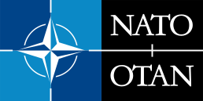

Організа́ція Північноатланти́чного до́гово́ру, також Північноатланти́чний алья́нс або НАТО (англ. North Atlantic Treaty Organization — NATO, фр. Organisation du traité de l 'Atlantique nord — OTAN) — міжнародна міжурядова організація, військово-політичний союз 31 держави Північної Америки і Європи, які прагнуть досягти мети Північноатлантичного договору, підписаного у Вашингтоні 4 квітня 1949.
Відповідно до статутних документів Альянсу головна роль НАТО полягає у забезпеченні свободи та безпеки країн-членів із використанням політичних і військових засобів. НАТО дотримується спільних для Альянсу цінностей демократії, індивідуальної свободи, верховенства права, мирного розв'язання суперечок і підтримує дані цінності в усьому євроатлантичному регіоні. Засадничим принципом Альянсу є спільність поглядів між північноамериканськими та європейськими членами НАТО, які поділяють однакові цінності та інтереси і віддані справі збереження демократичних принципів, що робить нероздільною безпеку Європи і Північної Америки. Альянс стоїть на захисті країн-членів від загрози агресії: головним військово-політичним принципом організації є система колективної безпеки, тобто спільних організованих дій усіх її членів у відповідь на напад ззовні[2][3].
Від часу свого заснування кількість нових держав-членів альянсу збільшилася з первинних 12 до 31 країни. Останньою державою-членом, яка приєдналась до НАТО, стала Фінляндія — 4 квітня 2023 року. НАТО зараз визнає Боснію і Герцеговину, яка отримала План дій щодо членства в НАТО в грудні 2018, Грузію та Україну як кандидатів на членство в альянсі.[4] Також 19 інших держав беруть участь у програмі НАТО — Партнерство заради миру, ще 15 країн беруть участь в інституціоналізованих програмах діалогу. Сукупні військові витрати всіх членів НАТО у 2020 році становили понад 57 % загальносвітового обсягу.[5] Члени організації погодились, що їхньою метою є досягнення або підтримка цільових витрат на оборону щонайменше 2 % від їхнього ВВП до 2024 року.[6][7]
